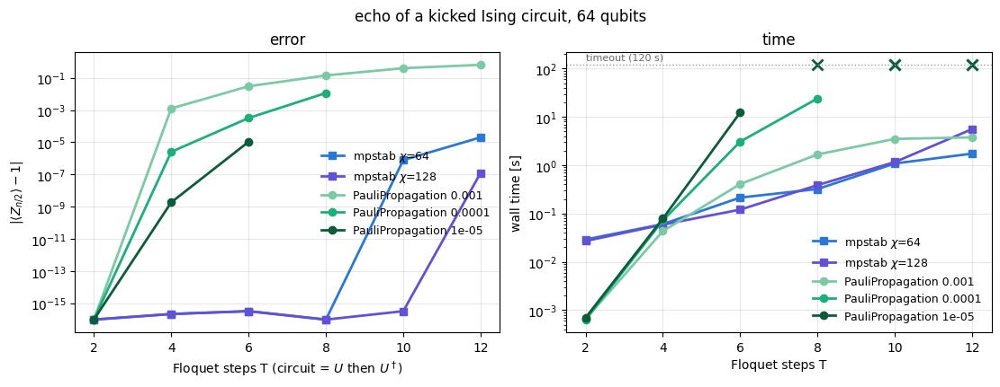

Echo benchmark: mpstab vs Pauli propagation¶
A kicked Ising Floquet evolution \(U\) (Clifford \(ZZ\) couplings, magic \(R_X\)/\(R_Z\) kicks) followed by \(U^\dagger\) is the identity, so \(\langle Z_{n/2}\rangle = 1\) exactly, at any width and depth. Neither simulator can tell: mpstab evolves the MPS through \(U\)’s entanglement and back out, and Pauli propagation grows \(U\)’s Pauli terms and has to cancel them again. Both truncations (bond dimension \(\chi\), coefficient threshold) show up as error.
Launch from the repository root:
uv run --with juliacall --with pandas --with jupyterlab jupyter lab examples/notebooks/benchmarks/
The PauliPropagation.jl cells download Julia and the package on first use (a few minutes); everything else needs only mpstab.
[1]:
import numpy as np
import matplotlib.pyplot as plt
import pandas as pd
import frameworks as fw
N = 64
STEPS = [2, 4, 6, 8, 10, 12]
THETA_H, THETA_Z = 0.7, 0.3 # the magic kicks
CHI = [64, 128]
PP_THRESHOLDS = [1e-3, 1e-4, 1e-5]
TIMEOUT = 120 # seconds per Pauli propagation run
[Qibo 0.3.6|INFO|2026-11-17 09:56:14]: Using numpy backend on /CPU:0
[2]:
def echo_circuit(n, steps):
forward = fw.kicked_ising(n, steps, theta_h=THETA_H, theta_z=THETA_Z)
return forward + forward.invert()
observable = fw.local_z(N, (N // 2,))
rows = []
for steps in STEPS:
circuit = echo_circuit(N, steps)
for chi in CHI:
r = fw.run_mpstab(circuit, observable, max_bond=chi)
rows.append(dict(method=f"mpstab $\\chi$={chi}", steps=steps,
error=abs(r["value"] - 1), time=r["time"]))
for threshold in PP_THRESHOLDS:
r = fw.run_pp_isolated(circuit, [], observable, timeout=TIMEOUT,
warmup_gates=len(circuit.queue) // (2 * steps),
min_abs_coeff=threshold)
rows.append(dict(method=f"PauliPropagation {threshold:g}", steps=steps,
error=np.nan if r is None else abs(r["value"] - 1),
time=np.nan if r is None else r["time"]))
print(f"T={steps} done")
results = pd.DataFrame(rows)
T=2 done
T=4 done
/Users/robbiati/Documents/PostDoc/mpstab-related/mpstab/.venv/lib/python3.11/site-packages/autoray/autoray.py:104: RuntimeWarning: divide by zero encountered in matmul
return func(*args, **kwargs)
/Users/robbiati/Documents/PostDoc/mpstab-related/mpstab/.venv/lib/python3.11/site-packages/autoray/autoray.py:104: RuntimeWarning: overflow encountered in matmul
return func(*args, **kwargs)
/Users/robbiati/Documents/PostDoc/mpstab-related/mpstab/.venv/lib/python3.11/site-packages/autoray/autoray.py:104: RuntimeWarning: invalid value encountered in matmul
return func(*args, **kwargs)
T=6 done
T=8 done
T=10 done
T=12 done
[3]:
colors = {f"mpstab $\\chi$={c}": col for c, col in zip(CHI, ["#2a78d6", "#6250d6"])}
colors.update({f"PauliPropagation {t:g}": col
for t, col in zip(PP_THRESHOLDS, ["#7cc9a6", "#1baf7a", "#0c5c3c"])})
fig, (ax_error, ax_time) = plt.subplots(1, 2, figsize=(11, 4.2), constrained_layout=True)
for method, d in results.groupby("method", sort=False):
style = dict(color=colors[method], marker="s" if "mpstab" in method else "o",
linewidth=2, label=method)
done = d.dropna()
ax_error.plot(done.steps, done.error.clip(lower=1e-16), **style)
ax_time.plot(done.steps, done.time, **style)
timed_out = d[d.time.isna()]
ax_time.plot(timed_out.steps, [TIMEOUT] * len(timed_out), "x",
color=colors[method], markersize=9, mew=2)
ax_time.axhline(TIMEOUT, color="0.6", linestyle=":", linewidth=1)
ax_time.annotate(f"timeout ({TIMEOUT} s)", (STEPS[0], TIMEOUT), xytext=(0, 4),
textcoords="offset points", fontsize=8, color="0.4")
ax_error.set(yscale="log", xlabel="Floquet steps T (circuit = $U$ then $U^\\dagger$)",
ylabel="$|\\langle Z_{n/2}\\rangle - 1|$", title="error")
ax_time.set(yscale="log", xlabel="Floquet steps T", ylabel="wall time [s]", title="time")
ax_error.legend(frameon=False, fontsize=9, loc="center right")
ax_time.legend(frameon=False, fontsize=9, loc="lower right")
for ax in (ax_error, ax_time):
ax.grid(alpha=0.3)
fig.suptitle(f"echo of a kicked Ising circuit, {N} qubits");

[4]:
results.pivot(index="steps", columns="method", values=["error", "time"])
[4]:
| error | time | |||||||||
|---|---|---|---|---|---|---|---|---|---|---|
| method | PauliPropagation 0.0001 | PauliPropagation 0.001 | PauliPropagation 1e-05 | mpstab $\chi$=128 | mpstab $\chi$=64 | PauliPropagation 0.0001 | PauliPropagation 0.001 | PauliPropagation 1e-05 | mpstab $\chi$=128 | mpstab $\chi$=64 |
| steps | ||||||||||
| 2 | 0.000000 | 0.000000 | 0.000000e+00 | 0.000000e+00 | 0.000000e+00 | 0.000638 | 0.000654 | 0.000695 | 0.027001 | 0.029077 |
| 4 | 0.000003 | 0.001256 | 1.880356e-09 | 2.220446e-16 | 2.220446e-16 | 0.072157 | 0.043245 | 0.078693 | 0.058977 | 0.060486 |
| 6 | 0.000320 | 0.029966 | 1.070823e-05 | 3.330669e-16 | 3.330669e-16 | 3.083810 | 0.408858 | 12.374697 | 0.120580 | 0.214061 |
| 8 | 0.011437 | 0.140621 | NaN | 0.000000e+00 | 0.000000e+00 | 24.199268 | 1.676191 | NaN | 0.388144 | 0.321941 |
| 10 | NaN | 0.397063 | NaN | 3.330669e-16 | 7.887690e-07 | NaN | 3.512329 | NaN | 1.165583 | 1.089443 |
| 12 | NaN | 0.641702 | NaN | 1.268659e-07 | 2.026276e-05 | NaN | 3.781336 | NaN | 5.615291 | 1.741837 |